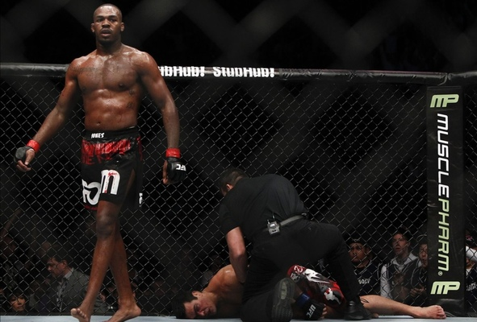

Desportos de Combate
Boxe
MMA
Karate
Judo
Taekwondo
Muay Thai
Jiu-Jitsu
Kickboxing

Nascimento:Jonathan Dwight Jones
19 de julho
de
1987
(38
anos)
Rochester
,
Nova York
Estados Unidos
Modalidade
Wrestling
,
Muaythai
,
Jiu-jítsu
,
Gaidojutsu
Total
30
Vitórias
28
Derrotas
1
Nascimento
Georges St. Pierre
19 de maio
de
1981
(44
anos)
Saint-Isidore
,
Quebec
,
Canadá
Modalidade
Wrestling
,
Jiu jitsu brasileiro
,
Muaythai
,
Karatê Kyokushin
Total
28
Vitórias
26
Derrotas
2